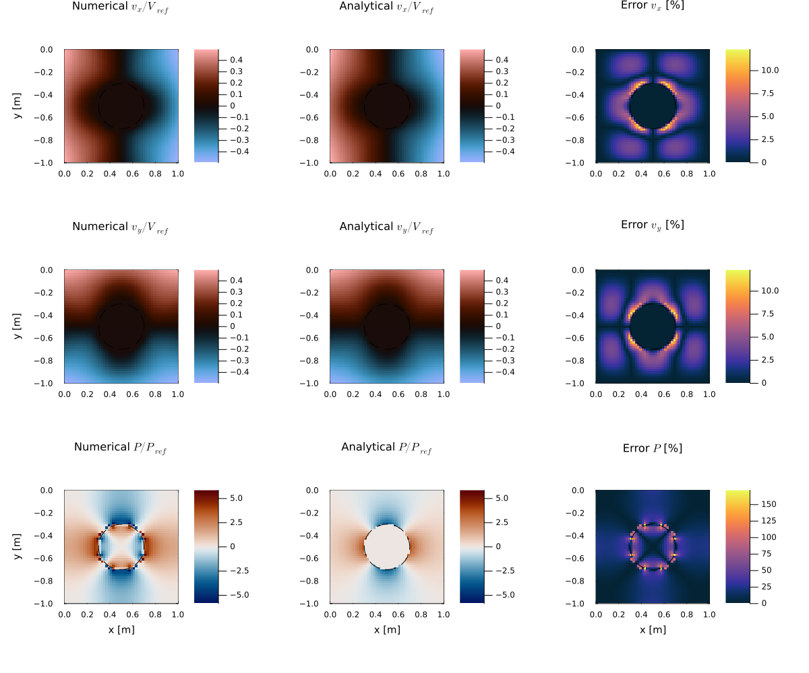

Viscous Inclusion
This example demonstrates the numerical solution of the incompressible Stokes equations for a circular viscous inclusion embedded in an infinite matrix undergoing pure shear deformation. Owing to its analytical solution (Schmid, 2002), the problem has become one of the classical benchmark tests for verifying Stokes solvers with strongly heterogeneous viscosity distributions.
The model consists of a circular inclusion with a viscosity four orders of magnitude larger than the surrounding matrix. Both materials have identical densities, such that no buoyancy forces are present and the deformation is driven exclusively by the prescribed pure-shear boundary conditions. The analytical solution provides the complete velocity and pressure fields, allowing a direct quantitative comparison with the numerical solution.
Unlike the Rayleigh-Taylor instability benchmark, this example focuses on solving the momentum equation for large viscosity contrasts rather than on material advection. The benchmark therefore provides an excellent verification test for the discretization of variable-viscosity Stokes flow, the implementation of velocity boundary conditions, and the pressure solution.
The analytical solution is evaluated on the same staggered numerical grid as the finite-difference solution. After solving the linear system using the defect correction method, the numerical and analytical velocity and pressure fields are compared. Relative L₂ and L∞ errors are computed, and spatial error maps are generated to assess the numerical accuracy.
Let's begin by loading the required modules.
using GeoModBox, Printf, Plots
using GeoModBox.InitialCondition, GeoModBox.Tracers.TwoD
using GeoModBox.MomentumEquation.TwoD
using Base.Threads, LinearAlgebra, StatisticsThe following parameters define the initial pure-shear deformation and the geometry of the circular inclusion. The inclusion is represented by passive markers, which are subsequently interpolated to the staggered finite-difference grid to obtain the viscosity distribution.
Ini = (
V = :PureShear,
p = :Inclusion,
ε = 1e-12,
)
EllA = 2e-1
EllB = 2e-1Next, the model geometry and the staggered finite-difference grid are defined. Since the benchmark compares the numerical solution with an analytical reference, a relatively modest grid resolution already provides an excellent assessment of the discretization accuracy.
# ==================== Define model geometry constants ================== #
M = Geometry(
ymin = -1.0, # Model depth [ m ]
ymax = 0.0,
xmin = 0.0,
xmax = 1.0, # Model length [ m ]
)
# ----------------------------------------------------------------------- #
# ====================== Define the numerical grid ====================== #
NC = (
x = 50,
y = 50,
)
NV = (
x = NC.x + 1,
y = NC.y + 1,
)
Δ = GridSpacing(
x = (M.xmax - M.xmin)/NC.x,
y = (M.ymax - M.ymin)/NC.y,
)
x = (
c = LinRange(M.xmin+Δ.x/2,M.xmax-Δ.x/2,NC.x),
ce = LinRange(M.xmin - Δ.x/2.0, M.xmax + Δ.x/2.0, NC.x+2),
v = LinRange(M.xmin,M.xmax,NV.x),
)
y = (
c = LinRange(M.ymin+Δ.y/2,M.ymax-Δ.y/2,NC.y),
ce = LinRange(M.ymin - Δ.y/2.0, M.ymax + Δ.y/2.0, NC.y+2),
v = LinRange(M.ymin,M.ymax,NV.y),
)
x1 = (
c2d = x.c .+ 0*y.c',
v2d = x.v .+ 0*y.v',
vx2d = x.v .+ 0*y.ce',
vy2d = x.ce .+ 0*y.v',
)
x = merge(x,x1)
y1 = (
c2d = 0*x.c .+ y.c',
v2d = 0*x.v .+ y.v',
vx2d = 0*x.v .+ y.ce',
vy2d = 0*x.ce .+ y.v',
)
y = merge(y,y1)
# ----------------------------------------------------------------------- #The physical properties are then specified. Both materials have identical densities, eliminating buoyancy forces from the governing equations. The viscosity contrast between the inclusion and the matrix is four orders of magnitude, providing a demanding test for the variable-viscosity Stokes solver.
# ====================== Define physical constants ====================== #
g = 0.0 # Gravitational acceleration [ m/s^2 ]
# 0 - upper layer; 1 - lower layer
η₀ = 1e19 # Viscosity composition 0 [ Pa s ]
η₁ = 1e23 # Viscosity composition 1 - Inclusion [ Pa s]
η = [η₀,η₁] # Viscosity for phases
ρ₀ = 3200.0 # Density composition 0 [ kg/m^3 ]
ρ₁ = 3200.0 # Density composition 1 [ kg/m^3 ]
ρ = [ρ₀,ρ₁] # Density for phases
phase = [0,1]
# ----------------------------------------------------------------------- #
# Allocation ============================================================ #
D = (
ρ = zeros(Float64,(NC...)),
ρ_ex = zeros(Float64,(NC.x+2,NC.y+2)),
p = zeros(Float64,(NC...)),
p_ex = zeros(Float64,(NC.x+2,NC.y+2)),
cp = zeros(Float64,(NC...)),
vx = zeros(Float64,(NV.x,NV.y+1)),
vy = zeros(Float64,(NV.x+1,NV.y)),
Pt = zeros(Float64,(NC...)),
vxc = zeros(Float64,(NC...)),
vyc = zeros(Float64,(NC...)),
vc = zeros(Float64,(NC...)),
wt = zeros(Float64,(NC.x,NC.y)),
wte = zeros(Float64,(NC.x+2,NC.y+2)),
wtv = zeros(Float64,(NV.x,NV.y)),
ηc = zeros(Float64,NC...),
η_ex = zeros(Float64,(NC.x+2,NC.y+2)),
ηv = zeros(Float64,NV...),
)
# ----------------------------------------------------------------------- #
# Needed for the defect correction solution ---
divV = zeros(Float64,NC...)
ε = (
xx = zeros(Float64,NC...),
yy = zeros(Float64,NC...),
xy = zeros(Float64,NV...),
)
τ = (
xx = zeros(Float64,NC...),
yy = zeros(Float64,NC...),
xy = zeros(Float64,NV...),
)
# ----------------------------------------------------------------------- #
# Boundary Conditions =================================================== #
VBC = (
type = (E=:const,W=:const,S=:const,N=:const),
val = (E=zeros(NV.y),W=zeros(NV.y),S=zeros(NV.x),N=zeros(NV.x),
vxE=zeros(NC.y),vxW=zeros(NC.y),vyS=zeros(NC.x),vyN=zeros(NC.x)),
)
# ----------------------------------------------------------------------- #The analytical solution is subsequently evaluated using the formulation of Dani et al. (1978). Because the analytical solution is non-dimensional, it is scaled using the prescribed background strain rate and the reference viscosity before being applied as Dirichlet boundary conditions on the numerical model.
# Initial Condition ===================================================== #
IniVelocity!(Ini.V,D,VBC,NV,Δ,M,x,y;Ini.ε)
# Get analytical Solution
AnaSol = (
Pa = zeros(Float64,NC...),
Vxa = zeros(Float64,NV.x,NC.y),
Vya = zeros(Float64,NC.x,NV.y),
Vx_N = zeros(Float64,NV.x,1),
Vx_S = zeros(Float64,NV.x,1),
Vx_W = zeros(Float64,NC.y,1),
Vx_E = zeros(Float64,NC.y,1),
Vy_N = zeros(Float64,NC.x,1),
Vy_S = zeros(Float64,NC.x,1),
Vy_W = zeros(Float64,NV.y,1),
Vy_E = zeros(Float64,NV.y,1),
)
Dani_Solution_vec!(Ini.V,AnaSol,M,x,y,EllA,η₁/η₀,NC,NV)
# Dimensional scaling of the analytical solution
# The analytical velocity is linear in the dimensional coordinates,
# so only the background strain-rate scale is required.
velocity_scale = Ini.ε
velocity_scale = Ini.ε
pressure_scale = η₀ * Ini.ε
# Conforming velocity nodes
AnaSol.Vxa .*= velocity_scale
AnaSol.Vya .*= velocity_scale
# Boundary velocities
AnaSol.Vx_N .*= velocity_scale
AnaSol.Vx_S .*= velocity_scale
AnaSol.Vx_W .*= velocity_scale
AnaSol.Vx_E .*= velocity_scale
AnaSol.Vy_N .*= velocity_scale
AnaSol.Vy_S .*= velocity_scale
AnaSol.Vy_W .*= velocity_scale
AnaSol.Vy_E .*= velocity_scale
# Pressure
AnaSol.Pa .*= pressure_scale
# Boundary Conditions ---
# Horizontal velocity
VBC.val.S .= AnaSol.Vx_S
VBC.val.N .= AnaSol.Vx_N
VBC.val.vxE .= AnaSol.Vx_E
VBC.val.vxW .= AnaSol.Vx_W
# Vertical velocity
VBC.val.E .= AnaSol.Vy_E
VBC.val.W .= AnaSol.Vy_W
VBC.val.vyS .= AnaSol.Vy_S
VBC.val.vyN .= AnaSol.Vy_N
# Initialize the unknown fields without erasing boundary values
D.vx[:, 2:end-1] .= 0.0
D.vy[2:end-1, :] .= 0.0
D.Pt .= 0.0The viscosity field is generated from passive markers using bilinear interpolation. Since the material distribution remains stationary in this benchmark, the marker interpolation is performed only once before assembling the Stokes system.
# Tracer Advection ====================================================== #
nmx,nmy = 5,5
noise = 0
nmark = nmx*nmy*NC.x*NC.y
Aparam = :phase
MAVG = (
PC_th = [similar(D.wte) for _ = 1:nthreads()], # per thread
PV_th = [similar(D.ηv) for _ = 1:nthreads()], # per thread
wte_th = [similar(D.wte) for _ = 1:nthreads()], # per thread
wtv_th = [similar(D.wtv) for _ = 1:nthreads()], # per thread
)
Ma = IniTracer2D(Aparam,nmx,nmy,Δ,M,NC,noise,Ini.p,phase;
ellA=EllA,ellB=EllB,α=α)
# Interpolate from markers to cell ---
Markers2Cells(Ma,nmark,MAVG.PC_th,D.ρ_ex,MAVG.wte_th,D.wte,x,y,Δ,Aparam,ρ)
D.ρ .= D.ρ_ex[2:end-1,2:end-1]
Markers2Cells(Ma,nmark,MAVG.PC_th,D.p_ex,MAVG.wte_th,D.wte,x,y,Δ,Aparam,phase)
D.p .= D.p_ex[2:end-1,2:end-1]
Markers2Cells(Ma,nmark,MAVG.PC_th,D.η_ex,MAVG.wte_th,D.wte,x,y,Δ,Aparam,η)
D.ηc .= D.η_ex[2:end-1,2:end-1]
Markers2Vertices(Ma,nmark,MAVG.PV_th,D.ηv,MAVG.wtv_th,D.wtv,x,y,Δ,Aparam,η)
# ----------------------------------------------------------------------- #The momentum equation is solved using the defect correction method. Because the viscosity distribution remains constant throughout the benchmark, the coefficient matrix is assembled and factorized only once. During each defect correction iteration, only the residual vector and solution correction need to be updated, making the solver particularly efficient for stationary linear problems.
niter = 50
atol = 1e-10 # Absolute tolerance
rtol = 1e-10 # # Relative convergence tolerance (RM/R0)
RM = 0.0 # Initialize absolute residual
RMrel = 0.0 # Initialize relative residual
# Numbering, without ghost nodes! ---
off = [ NV.x*NC.y, # vx
NV.x*NC.y + NC.x*NV.y, # vy
NV.x*NC.y + NC.x*NV.y + NC.x*NC.y] # Pt
Num = (
Vx = reshape(1:NV.x*NC.y, NV.x, NC.y),
Vy = reshape(off[1]+1:off[1]+NC.x*NV.y, NC.x, NV.y),
Pt = reshape(off[2]+1:off[2]+NC.x*NC.y,NC...),
)
ndof = maximum(Num.Pt)
K = ExtendableSparseMatrix(ndof,ndof)
δx = zeros(maximum(Num.Pt))
F = zeros(maximum(Num.Pt))
# Residuals ---
Fm = (
x = zeros(Float64,NV.x, NC.y),
y = zeros(Float64,NC.x, NV.y)
)
FPt = zeros(Float64,NC...)
R0 = 0.0
# ----------------------------------------------------------------------- #
# Solution ============================================================== #
# Initial Residual ------------------------------------------------------ #
# Assemble Coefficients ================================================= #
K = Assembly(NC, NV, Δ, D.ηc, D.ηv, VBC, Num)
Kfac = lu(K.cscmatrix)
# ----------------------------------------------------------------------- #
for iter=1:niter
Residuals2D!(D,VBC,ε,τ,divV,Δ,D.ηc,D.ηv,g,Fm,FPt)
F[Num.Vx] .= Fm.x
F[Num.Vy] .= Fm.y
F[Num.Pt] .= FPt
RM = norm(F)/length(F)
if iter == 1
R0 = max(RM, eps())
end
RMrel = RM/R0
@printf(" MCE %2d: ||R|| = %1.4e, ||R||/||R₀|| = %1.4e\n",iter,RM,RMrel)
(RM < atol || RM/R0 < rtol) && break
# Solution of the linear system ===================================== #
δx .= - (Kfac \ F)
# ------------------------------------------------------------------- #
# Update Unknown Variables ========================================== #
D.vx[:,2:end-1] .+= δx[Num.Vx]
D.vy[2:end-1,:] .+= δx[Num.Vy]
D.Pt .+= δx[Num.Pt]
end
D.Pt .-= mean(D.Pt)
AnaSol.Pa .-= mean(AnaSol.Pa)
# ----------------------------------------------------------------------- #Finally, the numerical solution is compared with the analytical reference solution. Relative L₂ and L∞ errors are computed for the velocity and pressure fields, and the results are visualized using identical color scales for the numerical and analytical solutions together with spatial error maps.
vx_num = D.vx[:, 2:end-1]
vy_num = D.vy[2:end-1, :]
L2_vx = norm(vx_num .- AnaSol.Vxa) / norm(AnaSol.Vxa) * 100.0
L2_vy = norm(vy_num .- AnaSol.Vya) / norm(AnaSol.Vya) * 100.0
L2_P = norm(D.Pt .- AnaSol.Pa) / norm(AnaSol.Pa) * 100.0
Linf_vx = maximum(abs.(vx_num .- AnaSol.Vxa)) /
maximum(abs, AnaSol.Vxa) * 100.0
Linf_vy = maximum(abs.(vy_num .- AnaSol.Vya)) /
maximum(abs, AnaSol.Vya) * 100.0
Linf_P = maximum(abs.(D.Pt .- AnaSol.Pa)) /
maximum(abs, AnaSol.Pa) * 100.0
@printf(" Relative L2 error vx: %8.4f %%\n", L2_vx)
@printf(" Relative L2 error vy: %8.4f %%\n", L2_vy)
@printf(" Relative L2 error P : %8.4f %%\n", L2_P)
@printf(" Relative L∞ error vx: %8.4f %%\n", Linf_vx)
@printf(" Relative L∞ error vy: %8.4f %%\n", Linf_vy)
@printf(" Relative L∞ error P : %8.4f %%\n", Linf_P)
Pe = abs.(D.Pt .- AnaSol.Pa) ./ maximum(abs, AnaSol.Pa) .* 100.0
Vxe = abs.(
D.vx[:, 2:end-1] .- AnaSol.Vxa
) ./ maximum(abs, AnaSol.Vxa) .* 100.0
Vye = abs.(
D.vy[2:end-1, :] .- AnaSol.Vya
) ./ maximum(abs, AnaSol.Vya) .* 100.0
# Visualization ========================================================= #
# Reference scales
Lref = M.xmax - M.xmin
Vref = Ini.ε * Lref
Pref = η₀ * Ini.ε
# Dimensionless fields
vx_num_plot = D.vx[:, 2:end-1] ./ Vref
vy_num_plot = D.vy[2:end-1, :] ./ Vref
P_num_plot = D.Pt ./ Pref
vx_ana_plot = AnaSol.Vxa ./ Vref
vy_ana_plot = AnaSol.Vya ./ Vref
P_ana_plot = AnaSol.Pa ./ Pref
# Common color limits
vx_lim = max(
maximum(abs, vx_num_plot),
maximum(abs, vx_ana_plot),
)
vy_lim = max(
maximum(abs, vy_num_plot),
maximum(abs, vy_ana_plot),
)
P_lim = max(
maximum(abs, P_num_plot),
maximum(abs, P_ana_plot),
)
Verr_lim = max(maximum(Vxe), maximum(Vye))
Perr_lim = maximum(Pe)
# Analytical inclusion boundary
θ = range(0.0, 2π, length=301)
xc = (M.xmin + M.xmax) / 2
yc = (M.ymin + M.ymax) / 2
xinc = xc .+ EllA .* cos.(θ)
yinc = yc .+ EllB .* sin.(θ)
# Initialize figure
p = plot(
layout = (3, 3),
size = (1200, 1000),
left_margin = 7Plots.mm,
right_margin = 5Plots.mm,
bottom_margin = 6Plots.mm,
top_margin = 4Plots.mm,
)
# Horizontal velocity =================================================== #
heatmap!(
p,
x.v,
y.c,
vx_num_plot';
subplot = 1,
color = :berlin,
clims = (-vx_lim, vx_lim),
title = "Numerical \$v_x/V_{ref}\$",
ylabel = "y [m]",
colorbar = true,
aspect_ratio = :equal,
xlims = (M.xmin, M.xmax),
ylims = (M.ymin, M.ymax),
framestyle = :box,
)
heatmap!(
p,
x.v,
y.c,
vx_ana_plot';
subplot = 2,
color = :berlin,
clims = (-vx_lim, vx_lim),
title = "Analytical \$v_x/V_{ref}\$",
colorbar = true,
aspect_ratio = :equal,
xlims = (M.xmin, M.xmax),
ylims = (M.ymin, M.ymax),
framestyle = :box,
)
heatmap!(
p,
x.v,
y.c,
Vxe';
subplot = 3,
color = :thermal,
clims = (0.0, Verr_lim),
title = "Error \$v_x\$ [%]",
colorbar = true,
aspect_ratio = :equal,
xlims = (M.xmin, M.xmax),
ylims = (M.ymin, M.ymax),
framestyle = :box,
)
# Vertical velocity ===================================================== #
heatmap!(
p,
x.c,
y.v,
vy_num_plot';
subplot = 4,
color = :berlin,
clims = (-vy_lim, vy_lim),
title = "Numerical \$v_y/V_{ref}\$",
ylabel = "y [m]",
colorbar = true,
aspect_ratio = :equal,
xlims = (M.xmin, M.xmax),
ylims = (M.ymin, M.ymax),
framestyle = :box,
)
heatmap!(
p,
x.c,
y.v,
vy_ana_plot';
subplot = 5,
color = :berlin,
clims = (-vy_lim, vy_lim),
title = "Analytical \$v_y/V_{ref}\$",
colorbar = true,
aspect_ratio = :equal,
xlims = (M.xmin, M.xmax),
ylims = (M.ymin, M.ymax),
framestyle = :box,
)
heatmap!(
p,
x.c,
y.v,
Vye';
subplot = 6,
color = :thermal,
clims = (0.0, Verr_lim),
title = "Error \$v_y\$ [%]",
colorbar = true,
aspect_ratio = :equal,
xlims = (M.xmin, M.xmax),
ylims = (M.ymin, M.ymax),
framestyle = :box,
)
# Pressure ============================================================== #
heatmap!(
p,
x.c,
y.c,
P_num_plot';
subplot = 7,
color = :vik,
clims = (-P_lim, P_lim),
title = "Numerical \$P/P_{ref}\$",
xlabel = "x [m]",
ylabel = "y [m]",
colorbar = true,
aspect_ratio = :equal,
xlims = (M.xmin, M.xmax),
ylims = (M.ymin, M.ymax),
framestyle = :box,
)
heatmap!(
p,
x.c,
y.c,
P_ana_plot';
subplot = 8,
color = :vik,
clims = (-P_lim, P_lim),
title = "Analytical \$P/P_{ref}\$",
xlabel = "x [m]",
colorbar = true,
aspect_ratio = :equal,
xlims = (M.xmin, M.xmax),
ylims = (M.ymin, M.ymax),
framestyle = :box,
)
heatmap!(
p,
x.c,
y.c,
Pe';
subplot = 9,
color = :thermal,
clims = (0.0, Perr_lim),
title = "Error \$P\$ [%]",
xlabel = "x [m]",
colorbar = true,
aspect_ratio = :equal,
xlims = (M.xmin, M.xmax),
ylims = (M.ymin, M.ymax),
framestyle = :box,
)
# Remove repeated labels and adjust fonts
for sp in 1:6
plot!(p; subplot=sp, xlabel="")
end
for sp in (2, 3, 5, 6, 8, 9)
plot!(p; subplot=sp, ylabel="")
end
for sp in 1:9
plot!(
p,
xinc,
yinc;
subplot = sp,
color = :black,
linewidth = 1.0,
linestyle = :dash,
label = "",
)
plot!(
p;
subplot = sp,
tickfontsize = 8,
guidefontsize = 10,
titlefontsize = 11,
)
end
if save_fig == 1
savefig(p,string("./examples/StokesEquation/2D/Results/ViscousInclusion_Summary.png"))
else
display(p)
end
display(to)The resulting comparison demonstrates that the finite-difference discretization accurately reproduces the analytical solution. The largest errors are confined to the viscosity interface, where the material properties are discontinuous and the analytical solution exhibits discontinuities in the stress field. Away from the inclusion boundary, both the velocity and pressure fields agree closely with the analytical solution, confirming the accuracy of the staggered-grid implementation.

Figure 1. Comparison between the numerical and analytical solutions for the horizontal velocity, vertical velocity, and pressure fields. The third column shows the corresponding relative error distributions. The largest errors are localized at the viscosity interface, where the material properties are discontinuous, while excellent agreement is obtained throughout the remainder of the domain.